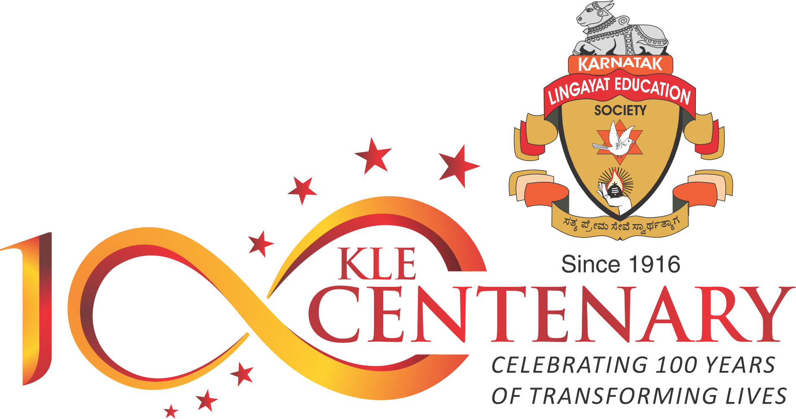
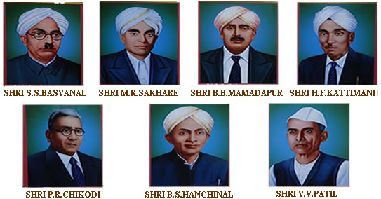

KLE Institute of Technology

History
In 1916, Karnataka Lingayat Education(K. L. E.) Society was founded by the Seven Founder Life Members, who are also addressed as "Saptarishis"
[Seven Saints]. On 13th November 1916, K.L.E. Society started an Anglo Vernacular School in Belgaum. Lingaraj College came into existence in June 1933. In 1947, B.V.B. College of Engineering and Technology was started in Hubli. J.N. Medical College at Belgaum and G.H. College at Haveri was started in the year 1963. From 1984 onwards, K.L.E. Society started Dental, Education, Nursing, Information Technology, Computer Applications, Hotel Management, Business Management, Tourism, Fashion Designing, Agriculture Colleges and Polytechnics across India. Today under the leadership of Mr. Prabhakar Kore an able and dynamic team leader KLE Society runs 207 institutions.

The founders of K.L.E.S pledged to dedicate for the cause of education with noble ideals and fertile imagination in heart & established Karnatak Lingayat Education Society. They are also addressed as “Saptarishis” [Seven Saints] in honour of their unparalleled service in the field of education. The saga begins with its illustrious founders. Sri. Chachadi Veerabhadrappa Gunappa Desai, ruler of chachadi province, Sri. Artal Rudragouda, District Deputy Collector in the British Government and Sri. Vaijappa Anigol, RaoBahadur during the British Rule, who all collectively believed in providing education for the common man. Their efforts were ably supplemented by the seven visionaries- Sri. S. S. Basavanal, Sri. M. R. Sakhare, Sri. B. B. Mamadapur, Sri. H. F. Kattimani, Sri. Panditappa Chikkodi, Sri. B. S. Hanchinal and Sri. Sardar Veeranagouda Patil, with the collective contribution from renowned philanthropists of the region, such as Sri. Sirsangi Lingaraj, Sri. Raja Lakhamagouda Sardesai and Sri. Bhoomaraddi Basappa and help from other philosophers, intellectuals and educationists, the society began laying a strong educational foundation, with its base at Belgaum, Karnataka.